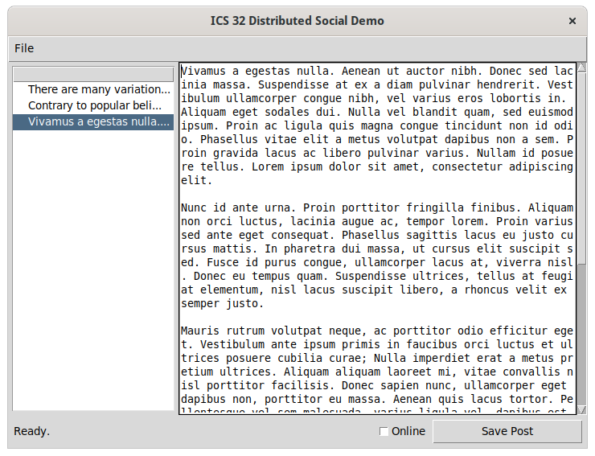

Assignment 5: A Graphical User Interface¶
Introduction¶
So we have finally arrived at the end. Over the course of the last four assignments you have built, from the ground up, a feature rich program in Python. The code that you have written enables a person to write personal journal entries, publish entries to an online server, enrich journal entries with data from web API’s, and encrypt journal data to keep it secure. Now it’s time to bring all of these features together by moving them from the command line to the windowed world of the graphical user interface.
For this assignment we will be using the Tkinter graphical toolkit to build a Graphical User Interface or GUI (like gooey) for the ICS 32 Distributed Social program.
Summary of Program Requirements¶
Modify and extend the ICS 32 DS Demo Tkinter interface.
Integrate existing code with Tkinter widgets.
Modify and update Tkinter widgets to display program information to a user.
Learning Goals¶
Learn how to build basic Graphical User Interfaces with Tkinter and Python.
Write event handlers and callback functions.
Structure and organize a GUI program with classes.
Program Requirements¶
For this assignment you will be given a mostly functional Tkinter program framework to get you started. Learning graphical toolkits is a big undertaking that is typically filled with a lot of trial and error. We could spend an entire quarter mastering the Tkinter toolkit if we so desired. So, rather than get bogged down attempting to work through all of the nuances of getting a Tkinter GUI to function the way we want, you will be spending your remaining time in this class extending an existing program that already works pretty well. The following image depicts the ICS 32 DS program in it’s default state with a DSU file loaded.

However, the version that is available for you, does not yet have the features required to get to the state pictured. To make this program fully functional, you will have to download the template and complete all of the TODO items described in the code.
Attention
The Distributed Social GUI Starter Code was updated on 7/17/21 to remove references to a version of the Profile module that we are no longer using for this course. If you are experiencing errors related to NaClProfile, please grab the latest version!
The Distributed Social GUI Starter Code
To get a better understanding of how this program was built, watch the lecture and walkthrough posted in the weekly notes.
Note
There is a lecture on Tkinter in the weekly notes page that covers the process for building this program, as well as some of the aspects of Tkinter you will need to know to complete the assignment.
Extra Credit¶
For this final assignment in ICS32 you will have the opportunity to receive up to 3 extra credit points. To receive a signal extra credit point you must add at least one of the following features to your Tkinter GUI. You may add up to 3 features for extra credit.
Add title support for posts.
Add a settings menu item and interface for username and password management.
Add a toolbar with quick buttons to insert your API keywords into the editor.
Add a bio menu item and interface for editing the user bio.
Add support for editing existing posts.
Add support for editing the location of the DSU server.
Add a custom feature (must complete at least one of the above first).
Add title support for posts¶
Currently, the GUI for the ICS 32 DS program extracts the titles for the post tree viewer from the first few characters of the post. It might be nice to provide users with the ability to write a proper title for each post and use that in the post tree viewer as well. To accomplish this feature a couple of changes must happen:
The Profile and Post classes must be updated to include an additional title attribute.
The GUI must be modified to support text editing for the title.
The post tree viewer widget must be updated to display post titles.
Add a quick button toolbar for keywords¶
In assignment 3, you introduced support for adding content from 3rd party API’s to your assignments. For this feature, you will add Tkinter buttons that insert your API data into the post entry editor. To complete this feature you will need to:
Add buttons to the GUI. You may either add them in the footer frame between the status label and online checkbox, create a new ‘Toolbar’ frame class and add it above the entry editor, or add a new menu dropdown with menu items for your keywords.
You must implement the @weather feature, but you may also want to include any additional API keywords you created for assignment 3.
When a keyword is selected, the API data should be placed at the position of the cursor in the entry editor window.
Add support for post editing¶
Currently, the post editor only adds new posts. When the Save Post button is clicked, whatever content is in the entry editor widget will be saved as a new post. A more realistic way of using this program would be to allow a user to also edit their post. There are a number of ways to go about adding this feature, here are a two:
Detect when an existing post has been selected and edited and change the operation of the Save Post click event to update rather than add when appropriate.
Add new buttons to perform different operations. An ‘edit’ button, for example, would update a post. Whereas a ‘new’ button would add a post.
Add support for DSU server location editing¶
The current implementation of the program requires you to hard code in the URL for the DSU server. However, servers come and go, and in the future your users may want to move their posts to a new location. So for this feature you will be required to add a text entry widget that allows your user to edit the URL of the DSU server. (HINT: This feature pairs nicely with feature 2 and 4 in terms of the type and organization of code you will need to write).
Add a new ‘server’ item to the menu.
Open a new window when the server item is clicked.
Display current server URL in the server window.
Add a Tkinter Text or Entry widget to allow the user to change their server.
Add a Tkinter button to save and close the server window.
Save edited server URL to the DSU file.
Submitting¶
Upload all of your program files in a single .zip file to Canvas by the due date. NAME YOUR MAIN FILE a4.py. If you complete any of the extra credit items, be sure to add a README file that describes exactly which features you implemented. You can include the README in your zipped submission, but YOU MUST ALSO LEAVE A COMMENT IN CANVAS ON YOUR SUBMISSION THAT INDICATES YOU HAVE EXTRA CREDIT FEATURES IN YOUR PROGRAM. Failure to leave a comment means that we may not notice the extra credit features when grading.
Additionally, all modules that you create or edit must include the following comment on the first three lines:
# NAME
# EMAIL
# STUDENT ID
How we will grade your submission¶
This assignment will be graded on a 15-point scale, with the 15 points being allocated completely to whether or not you submitted something that meets all of the above requirements. The following rubric will be used:
- Requirements and Function | 12 pts
Does the program do what it is supposed to do?
Are there any bugs or errors?
- Quality and Design | 3 pts
Is the code well designed?
Is the code clearly documented?
- Extra Credit | 3 pts
Is one extra credit feature implemented and functioning as intended? 1 pt
Is a second extra credit feature implemented and functioning as intended? 1 pt
Is a third extra credit feature implemented and functioning as intended? 1 pt
By now you should be clearly documenting your code and expending effort to ensure that your code design follows the conventions we have been discussing throughout the class. Therefore, we will be taking a much stricter stance on quality and design than we have in previous assignments.